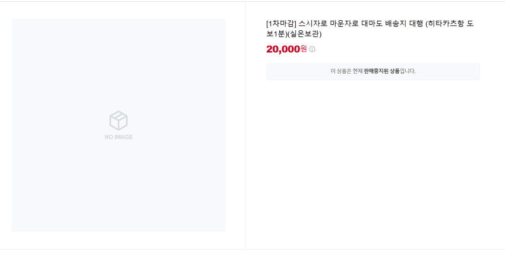

— · 24 · 2026-11-17 18:26:03 · 원문

1차 마감 먼데 ㅋㅋㅋㅋㅋ 냉장고 터져나가나
수집 당시 댓글 24개
ㅇㅇ · 11.17 13:07:04
↳ 답글 · 스갤러 · 11.17 13:07:38
↳ 답글 · 1q2w3e4r · 11.17 15:37:35
↳ 답글 · ㅇㅇ · 11.17 19:04:12
꿀자루 · 11.17 13:11:36
2456778 · 11.17 18:26:39
봇치쟝 · 11.17 18:27:17
ㅇㅇ · 11.17 18:27:20
ㅇㅇ · 11.17 18:31:45
ㅇㅇ · 11.17 18:32:12
Кошечка · 11.17 18:36:27
ㅇㅇ · 11.17 18:36:56
ㅇㅇ · 11.17 18:36:58
↳ 답글 · ㅇㅇ · 11.17 18:48:16
ds · 11.17 18:37:35
ㅇㅇ · 11.17 18:43:07
ㅇㅇ · 11.17 18:50:31
↳ 답글 · ㅇㅇ · 11.17 18:58:20
ㅇㅇ · 11.17 18:54:36
ㅇㅇ · 11.17 19:03:07
ㅇㅇ · 11.17 19:15:36
ㅇㅇ · 11.17 19:21:32
↳ 답글 · ㅇㅇ · 11.17 19:39:49
ㅇㅇ · 11.17 19:39:19
댓글
수집 당시 댓글 24개
ㅇㅇ · 11.17 13:07:04
· 스갤러 · 11.17 13:07:38
· 1q2w3e4r · 11.17 15:37:35
· ㅇㅇ · 11.17 19:04:12
꿀자루 · 11.17 13:11:36
2456778 · 11.17 18:26:39
봇치쟝 · 11.17 18:27:17
ㅇㅇ · 11.17 18:27:20
ㅇㅇ · 11.17 18:31:45
ㅇㅇ · 11.17 18:32:12
Кошечка · 11.17 18:36:27
ㅇㅇ · 11.17 18:36:56
ㅇㅇ · 11.17 18:36:58
· ㅇㅇ · 11.17 18:48:16
ds · 11.17 18:37:35
ㅇㅇ · 11.17 18:43:07
ㅇㅇ · 11.17 18:50:31
· ㅇㅇ · 11.17 18:58:20
ㅇㅇ · 11.17 18:54:36
ㅇㅇ · 11.17 19:03:07
ㅇㅇ · 11.17 19:15:36
ㅇㅇ · 11.17 19:21:32
· ㅇㅇ · 11.17 19:39:49
ㅇㅇ · 11.17 19:39:19